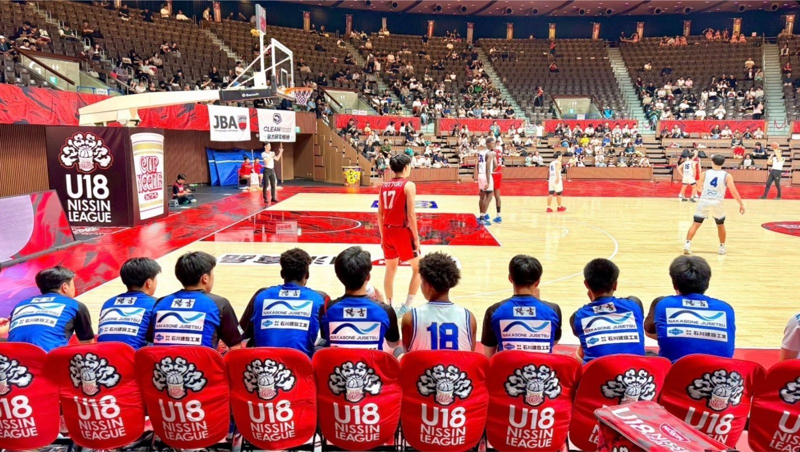

陽吉グループ、 大分・柳ヶ浦高校男子バスケ部のスポンサーに就任 —— U18日清食品トップリーグ2026初出場、開幕戦で鳥取城北を67-57で撃破
株式会社陽吉グループは8月24日、大分県宇佐市の柳ヶ浦高等学校男子バスケットボール部のスポンサーに就任し、チームにユニフォームを贈呈したと発表した。柳ヶ浦は高校バスケ最高峰のリーグ戦「U18日清食品トップリーグ2026 ディビジョン1」に今季初出場し、8月22日の開幕戦で鳥取城北高校を67-57で破っている。

全国8校だけのリーグに初出場、贈呈ユニフォームで開幕戦へ
「U18日清食品トップリーグ2026 ディビジョン1」は、全国の強豪8校のみが出場を許される高校バスケットボールの最高峰リーグ戦だ。柳ヶ浦高校は今季が初出場となる。陽吉グループはこのタイミングでスポンサーに就任し、チームへユニフォームを贈呈した。
開幕戦は前半で主導権、追い上げ振り切り67-57
8月22日に国立代々木競技場第二体育館で行われた男子開幕戦、柳ヶ浦は第1クォーターから積極的な攻守で18-9とリードして立ち上がった。第2クォーターには一時20点差をつける展開に持ち込む。後半は鳥取城北の激しい追い上げを受け、一時7点差まで詰め寄られたが、守備で踏ん張って流れを渡さず67-57で競り勝った。クォータースコアは柳ヶ浦が18-15-22-12、鳥取城北が9-12-18-18。リーグ戦は11月15日の最終週まで、全国各地で8チームによる総当たり戦が続く。
「地方のチームを応援したい」——リユース企業がスポンサーに
陽吉グループは、高級腕時計やエルメスバッグ、ハイブランドジュエリーの買取・販売を手がけるリユース企業。2021年2月設立で、東京・大阪・銀座に店舗を構え、3期累計売上2,356億円を達成しているという。今回のスポンサー就任について同社は、都市部に比べて注目や支援が集まりにくい地方のチームを応援したいという想いが背景にあると説明している。
代表取締役社長の吉山亨氏は「子どもたちの真剣なまなざしと、地方から全国の頂点に挑む姿に心を動かされました。ユニフォームに袖を通した選手たちが、のびのびと自分たちのバスケットボールを楽しみ、大きく羽ばたいてくれることを願っています」とコメントしている。
出典: 株式会社陽吉グループ プレスリリース「【地方から日本一へ、子どもたちの挑戦を応援】 陽吉グループ、大分県・柳ヶ浦高校 バスケットボール部のスポンサーに就任」（PR TIMES・2026年8月24日）
https://prtimes.jp/main/html/rd/p/000000021.000184560.html